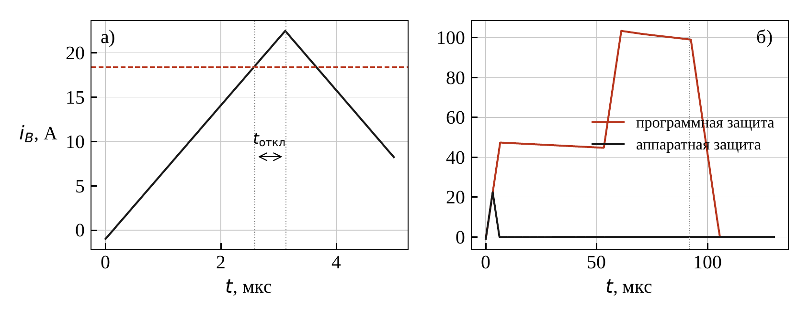
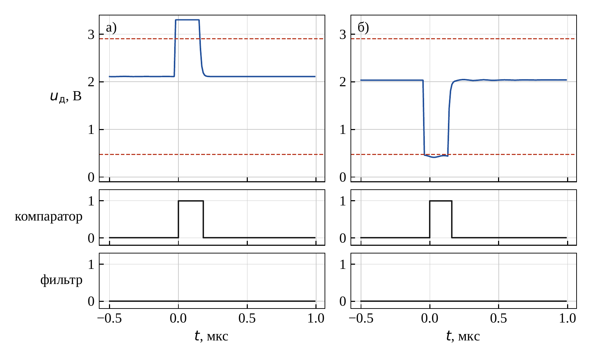
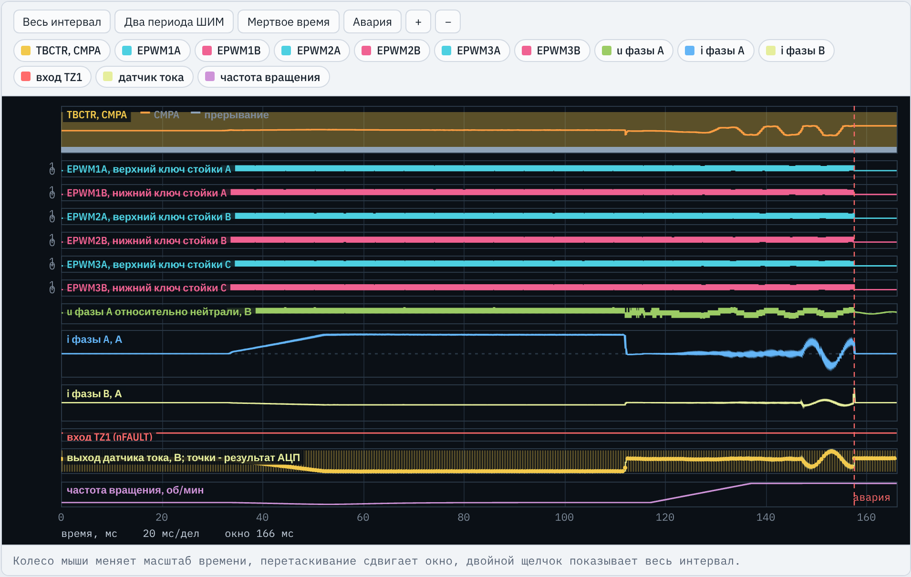
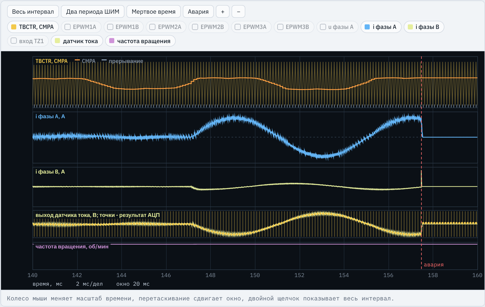
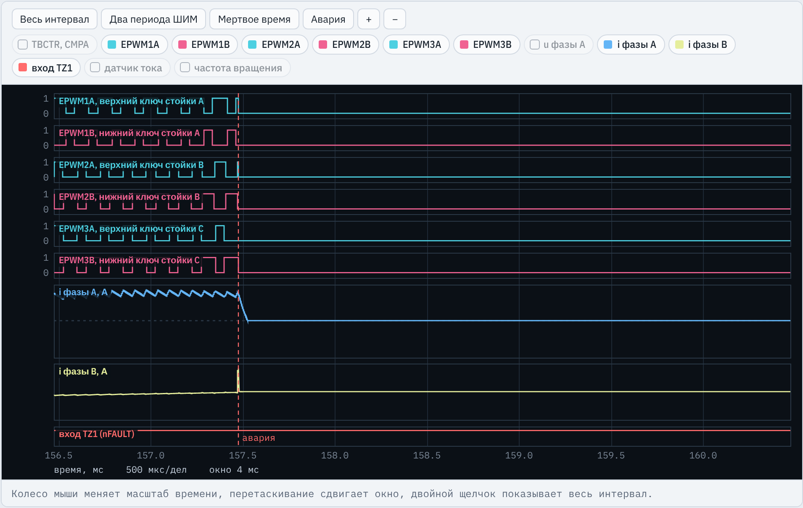
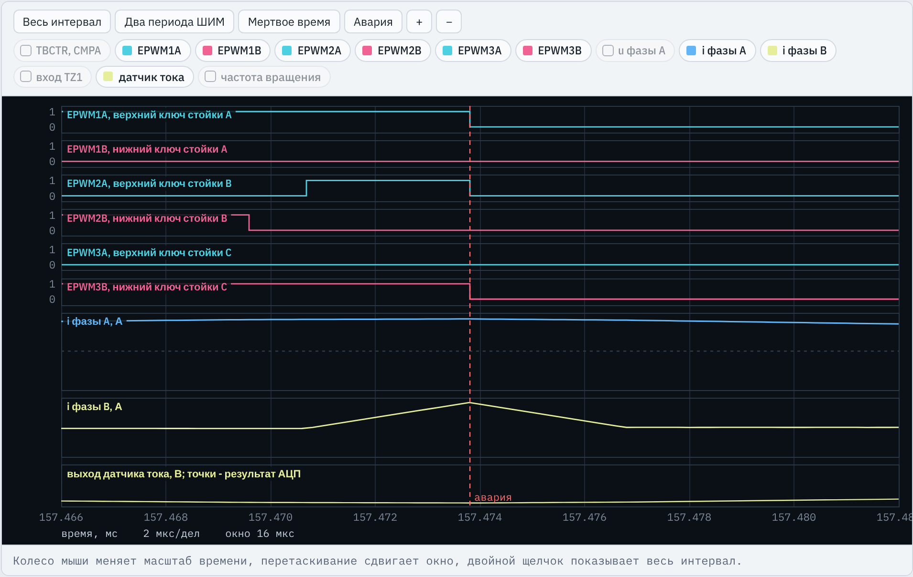

TMS320F2837xD · ЛАБОРАТОРНАЯ РАБОТА № 9
Компаратор, цифровой фильтр, ePWM X-BAR и Digital Compare закрывают ключи при коротком замыкании за доли микросекунды без участия программы
Место работы в курсе
Программа ЛР9 — это программа ЛР6, к которой добавлена аппаратная защита по току и определение причины отключения.
ШИМ стойки, мертвое время; вход TZ1 (nFAULT) вызывает однократное отключение (TZSEL.OSHT1), состояние выходов по TZCTL
АЦП по событию ePWM, калибровка нуля датчика, программная защита по току командой TZFRC.OST
Векторное управление СДПМ: два датчика тока, Кларк и Парк, регуляторы токов. Эта программа — основа ЛР9
Аппаратная защита: CMPSS, цифровой фильтр, ePWM X-BAR, Digital Compare; уставки после калибровки; причина отключения
Далее ЛР10 (комплексные испытания сервопривода) использует эту защиту без изменений: CMP_A, CMP_B, trip_src, trip_ph входят в ее программу.
Стенд C2000 · ЛР9. Аппаратная токовая защита на CMPSS
2 / 24
Инженерная задача
TZFRC — до двух периодов ШИМI_пик = I_hw + U_d t_откл / L_к вариант 1: 18,4 + 7,5 · 0,54 ≈ 22,5 А программная защита в той же модели: 103 А
Иерархия уставок: Imax (программная, перегрузка) < Ihw (аппаратная, КЗ) < допустимый импульсный ток транзисторов.
Стенд C2000 · ЛР9. Аппаратная токовая защита на CMPSS
3 / 24
Зачем

а) аппаратная защита — ток фазы B; штриховая — уставка 18,4 А; ключи закрыты через 0,54 мкс после уставки, пик 22,5 А
б) только программная — та же программа без TZSEL.DCAEVT1: отключение через 90 мкс, ток 103 А
пунктир на б) — моменты выборки АЦП
Вариант 1, режим B испытаний: замыкание фаз B и C с индуктивностью контура 40 мкГн в момент включения ключей.
Компаратор следит за током непрерывно и не ждет выборки АЦП. Наибольший ток при аппаратной защите в 4,6 раза меньше, чем при программной.
Стенд C2000 · ЛР9. Аппаратная токовая защита на CMPSS
4 / 24
Что делает студент
CMP_A, CMP_B, MUX_A, MUX_B, I_HW, T_SPFILT_PRESC, FILT_N, D_HWInitCmpss(): компараторы, ЦАП, цифровые фильтрыInitTripXbar() и цифровое сравнение в InitEPwmLeg()SetThresholds() после калибровки; сброс защелок и флагов в PwmEnable()trip_src, trip_ph в обработчике АЦПmain() с вызовами новых функций, каркас обработчика, переменные trip_src, trip_ph, dac_ah…dac_bl. Пометки «Перенести из своей программы ЛР6» — перенос без изменений, кроме ADC_CH_A, ADC_CH_B (таблица А.1). Результат: протокол И1–И10, исследование, отчет.
Стенд C2000 · ЛР9. Аппаратная токовая защита на CMPSS
5 / 24
Структура защиты
ADCINA2 = вход АЦП и CMPIN1P
компараторы H и L, ЦАП уставок NH, NL
7 отсчетов по 50 нс подряд
MUX0 = 1 подает CTRIPH или CTRIPL на TRIP4
TRIPIN4 подан на DCAH, событие DCAEVT1
однократное отключение, оба ключа LO по TZCTL
Фаза B: ADCIN14 (CMPIN4P), CMPSS4, MUX6, тот же TRIP4. Процессор в цепи не участвует.
tоткл ≈ τд + tк + NфTф + Tф = 0,16 + 0,03 + 0,35 + 0,05 ≈ 0,59 мкс ≤ 1,10 мкс
настраивает путь один раз, записывает уставки после калибровки, читает причину отключения
ток КЗ идет через две стойки: отключение одной стойки его не прерывает
Стенд C2000 · ЛР9. Аппаратная токовая защита на CMPSS
6 / 24
Структура программы
main(): InitCmpss(&CMP_A), InitCmpss(&CMP_B), InitTripXbar(), затем InitEPwmLeg() для трех модулей при TBCLKSYNC = 0, PwmTrip(). Далее все — в adca1_isr():
выходы закрыты; 256 выборок: off_a, off_b, затем SetThresholds() и PwmEnable()
начальная ориентация ротора 80 мс (ЛР6); проверка TZFLG.OST
векторное управление (ЛР6); проверка TZFLG.OST и программная защита
выходы закрыты; trip_src, trip_ph сохраняют причину
компараторы, фильтр, X-BAR, DC и TZ работают постоянно и закрывают ключи в любой момент периода
раз в период ШИМ замечает уже случившееся отключение (флаг OST) и определяет его источник
Стенд C2000 · ЛР9. Аппаратная токовая защита на CMPSS
7 / 24
Теория
uд = U0 + kп S i: ток любого знака выше Ihw выводит напряжение из окна U0 ± S Ihw.
NH = N0 + D, NL = N0 − D; для варианта 1 D = 1507,3 кода.
N0 — код нуля из калибровки (off_a, off_b). ЦАП и АЦП имеют общее опорное VDDA: код АЦП прямо записывается в ЦАП.
Полярность датчика меняет только то, какой из компараторов сработает.
Стенд C2000 · ЛР9. Аппаратная токовая защита на CMPSS
8 / 24
Теория

uд — выход датчика фазы A на входе компаратора, В (а — включение верхнего ключа, б — нижнего)
штриховые — уставки NH, NL в вольтах
компаратор — выход без фильтра: 1 на время помехи
фильтр — выход фильтра остается 0
Помеха 1,6 В больше полуширины окна 1,21 В. Фильтр: отсчеты через Tф = 50 нс, выход меняется после Nф = 7 одинаковых подряд. Помеха 0,20 мкс дает не более 6 отсчетов.
Если фильтр не выбран (CTRIPxSEL = 0) или окно короче помехи, защита срабатывает при первом переключении после включения выходов.
Стенд C2000 · ЛР9. Аппаратная токовая защита на CMPSS
9 / 24
Задания 1 и 2
lr9_reference.c, определения (вариант 1)
#define ADC_CH_A 2
#define ADC_CH_B 14
// ...
#define CMP_A Cmpss1Regs
#define CMP_B Cmpss4RegsВходы датчиков по таблице А.1 (не как в ЛР6). ADCINA2 — это CMPIN1P, значит CMPSS1; ADCIN14 — CMPIN4P, значит CMPSS4
#define MUX_A 0 #define MUX_B 6
Мультиплексор 2(k − 1) подает CTRIPH_OR_CTRIPL подсистемы CMPSSk: CMPSS1 — MUX0, CMPSS4 — MUX6
#define I_HW 18.4f #define T_SP 2.00e-7f
Из таблицы А.1: уставка 18,4 А по модулю тока, наибольшая длительность помехи 0,20 мкс
#define FILT_PRESC 9 #define T_F ((FILT_PRESC + 1) * 5.0e-9f)
Такт фильтра SYSCLK / 10: Tф = 10 / 200 МГц = 50 нс
#define FILT_N ((Uint16)((T_SP + 50.0e-9f) / T_F) + 2)
Формула (5): ⌊0,25 / 0,05⌋ + 2 = 7 отсчетов (0,35 мкс)
#define D_HW (HALL_S * I_HW * 4096.0f / 3.3f)
Формула (3): 0,066 · 18,4 · 4096 / 3,3 = 1507,3 кода ЦАП
Стенд C2000 · ЛР9. Аппаратная токовая защита на CMPSS
10 / 24
Задание 3
lr9_reference.c, InitCmpss()
EALLOW;
c->COMPCTL.bit.COMPDACE = 1;Регистры CMPSS защищены. COMPDACE включает компараторы и ЦАП подсистемы (И2)
c->COMPCTL.bit.COMPHSOURCE = 0;
c->COMPCTL.bit.COMPLSOURCE = 0;Отрицательные входы обоих компараторов — от ЦАП уставок, а не от вывода CMPINxN
c->COMPCTL.bit.COMPHINV = 0;
c->COMPCTL.bit.COMPLINV = 1;Окно: верхний дает 1 выше NH, нижний с инверсией — 1 ниже NL. Оба выхода «1 = авария», их можно объединить по ИЛИ
c->COMPHYSCTL.bit.COMPHYS = 2;
Гистерезис 2× типового: нет дребезга выхода вблизи уставки
c->COMPDACCTL.bit.SELREF = 0;
c->COMPDACCTL.bit.DACSOURCE = 0;
c->COMPDACCTL.bit.SWLOADSEL = 0;Опорное ЦАП — VDDA, как у АЦП: код ЦАП = код АЦП. Код из DACHVALS, загрузка по SYSCLK
c->DACHVALS.bit.DACVAL = 4095;
c->DACLVALS.bit.DACVAL = 0;До калибровки — края диапазона: компараторы не срабатывают
Стенд C2000 · ЛР9. Аппаратная токовая защита на CMPSS
11 / 24
Задание 3
lr9_reference.c, InitCmpss() (продолжение)
c->CTRIPHFILCLKCTL.bit.CLKPRESCALE = FILT_PRESC;
Период отсчетов Tф = (9 + 1) / 200 МГц = 50 нс
c->CTRIPHFILCTL.bit.SAMPWIN = FILT_N - 1;
c->CTRIPHFILCTL.bit.THRESH = FILT_N - 1;Окно из 7 отсчетов, порог 7: выход меняется только после 7 одинаковых отсчетов подряд
c->CTRIPHFILCTL.bit.FILINIT = 1;
Инициализация отсчетов фильтра после задания параметров (листинг 1)
c->CTRIPLFILCLKCTL.bit.CLKPRESCALE = FILT_PRESC;
// ... то же для CTRIPLFILCTLТакой же фильтр для нижнего компаратора
c->COMPCTL.bit.CTRIPHSEL = 2;
c->COMPCTL.bit.CTRIPLSEL = 2;
EDIS;На выходы CTRIPH, CTRIPL — выход фильтра (2). Значение 0 — асинхронный выход компаратора: ложное отключение от первой же помехи (И4)
Стенд C2000 · ЛР9. Аппаратная токовая защита на CMPSS
12 / 24
Задание 4
lr9_reference.c, InitTripXbar(), InitEPwmLeg()
EPwmXbarRegs.TRIP4MUX0TO15CFG.all |=
(1UL << (2 * MUX_A)) | (1UL << (2 * MUX_B));Поле MUXn — 2 бита: значение 1 = CTRIPH_OR_CTRIPL. MUX0 — биты 1:0, MUX6 — биты 13:12
EPwmXbarRegs.TRIP4MUXENABLE.all |=
(1UL << MUX_A) | (1UL << MUX_B);Подключить MUX0 и MUX6 к TRIP4 (логическое ИЛИ разрешенных входов)
p->DCTRIPSEL.bit.DCAHCOMPSEL = 3;
p->TZDCSEL.bit.DCAEVT1 = 2;DCAH = TRIPIN4 (код 3); событие DCAEVT1 при DCAH = 1
p->DCACTL.bit.EVT1SRCSEL = 0;
p->DCACTL.bit.EVT1FRCSYNCSEL = 1;Без фильтра бланкирования; асинхронно, без ожидания такта TBCLK
p->TZSEL.bit.DCAEVT1 = 1;
DCAEVT1 — источник однократного отключения. Строки в InitEPwmLeg(), значит, в каждом из ePWM1–ePWM3
Стенд C2000 · ЛР9. Аппаратная токовая защита на CMPSS
13 / 24
Задание 5
lr9_reference.c, SetThresholds(), adca1_isr()
dac_ah = (Uint16)fminf(off_a + D_HW + 0.5f, 4095.0f);
dac_al = (Uint16)fmaxf(off_a - D_HW + 0.5f, 0.0f);NH = N0 + D, NL = N0 − D от измеренного нуля; +0,5 — округление, ограничение 0…4095
dac_bh = (Uint16)fminf(off_b + D_HW + 0.5f, 4095.0f);
dac_bl = (Uint16)fmaxf(off_b - D_HW + 0.5f, 0.0f);То же для датчика фазы B со своим нулем off_b
EALLOW;
CMP_A.DACHVALS.bit.DACVAL = dac_ah;
CMP_A.DACLVALS.bit.DACVAL = dac_al;
// ... то же для CMP_B
EDIS;Запись в ЦАП; при SWLOADSEL = 0 код действует со следующего такта SYSCLK
off_b = sum_b / CAL_N;
SetThresholds();
state = ST_ALIGN;Вызов в ST_CAL сразу после расчета нулей и до PwmEnable()
Стенд C2000 · ЛР9. Аппаратная токовая защита на CMPSS
14 / 24
Задания 5 и 6
lr9_reference.c, PwmEnable(), adca1_isr()
CMP_A.COMPSTSCLR.bit.HLATCHCLR = 1;
CMP_A.COMPSTSCLR.bit.LLATCHCLR = 1;
// ... то же для CMP_BСброс защелок компараторов: иначе старая защелка исказит trip_ph при следующем отключении
EPwm1Regs.TZOSTCLR.all = 0x00FF;
EPwm2Regs.TZOSTCLR.all = 0x00FF;
EPwm3Regs.TZOSTCLR.all = 0x00FF;Сброс флагов источников однократного отключения, затем TZCLR.OST (ЛР6) включает выходы
if (state != ST_FAULT && (fabsf(i_a) > I_MAX || // ...
{
PwmTrip();
trip_src = 3;
state = ST_FAULT;
}Программная защита из ЛР6. TZFRC не устанавливает флагов источника, поэтому причину 3 программа запоминает сама
Стенд C2000 · ЛР9. Аппаратная токовая защита на CMPSS
15 / 24
Задание 6
lr9_reference.c, adca1_isr(), ветвь state != ST_CAL
if ((state == ST_ALIGN || state == ST_RUN) &&
EPwm1Regs.TZFLG.bit.OST)
{Выходы были включены, а модуль TZ их отключил. Флаг OST общий для всех источников
if (EPwm1Regs.TZOSTFLG.bit.DCAEVT1)
{
trip_src = 2;
trip_ph = 0;Источник — событие цифрового сравнения, то есть компараторы: причина 2
if (CMP_A.COMPSTS.bit.COMPHLATCH ||
CMP_A.COMPSTS.bit.COMPLLATCH) trip_ph |= 1;
if (CMP_B.COMPSTS.bit.COMPHLATCH ||
CMP_B.COMPSTS.bit.COMPLLATCH) trip_ph |= 2;Фаза по защелкам выходов фильтров: 1 — A, 2 — B, 3 — обе
}
else if (EPwm1Regs.TZOSTFLG.bit.OST1) trip_src = 1;
state = ST_FAULT;
}Вход TZ1 — сигнал nFAULT драйверов: причина 1. Автомат переходит в ST_FAULT
Стенд C2000 · ЛР9. Аппаратная токовая защита на CMPSS
16 / 24
Осциллограф

TBCTR, CMPA — счетчик ePWM1 и уставка CMPA; полоса снизу — прерывания
EPWM1A … EPWM3B — шесть ключей; включены после калибровки (≈32 мс), все закрыты в 157,47 мс
u фазы A — напряжение фазы A относительно нейтрали, В
i фазы A, i фазы B — токи, А: ориентация 6,5 А до 112 мс, скачок iq_ref до 4,1 А в 147 мс, КЗ
вход TZ1 — nFAULT остается 1: отключение не от драйверов
датчик тока — выход датчика фазы A, В; точки — выборки АЦП
частота вращения — нагрузочная машина: 1500 об/мин с 137 мс
Стенд C2000 · ЛР9. Аппаратная токовая защита на CMPSS
17 / 24
Осциллограф

TBCTR, CMPA — CMPA изменяется с частотой тока: работает векторная ШИМ
i фазы A — после скачка iq_ref в 147 мс — синусоида 125 Гц (1500 об/мин, p = 5), амплитуда около 4,1 А
i фазы B — ток той же частоты; в 157,47 мс — импульс тока КЗ (масштаб полосы по нему)
датчик тока — датчик фазы A, В: зеркален току (полярность −1); после отключения — уровень нуля
частота вращения — постоянна, 1500 об/мин
Ложных отключений нет, хотя каждое переключение ключа дает помеху на входе компаратора (на этом канале ее нет: помеха моделируется только на входах компараторов).
Стенд C2000 · ЛР9. Аппаратная токовая защита на CMPSS
18 / 24
Осциллограф

EPWM1A … EPWM3B — до 157,47 мс — ШИМ трех стоек; после — все шесть ключей в 0 и остаются закрытыми
i фазы A — спадает до нуля за десятки микросекунд через обратные диоды
i фазы B — узкий импульс тока короткого замыкания
вход TZ1 — все время 1 — сигнала nFAULT нет
Отключение однократное: в следующих периодах ШИМ выходы не включаются. Источник — DCAEVT1, поэтому trip_src = 2, trip_ph = 2.
Стенд C2000 · ЛР9. Аппаратная токовая защита на CMPSS
19 / 24
Осциллограф

EPWM2B, EPWM2A — 157,4696 мс нижний ключ B закрыт, через мертвое время 1,1 мкс включен верхний — начало КЗ B–C
i фазы B — растет 7,5 А/мкс, 18,4 А в 157,4733 мс, пик 22,5 А
EPWM1A, EPWM2A, EPWM3B — включенные ключи закрыты одновременно в 157,4739 мс — через 0,54 мкс после уставки
i фазы A, датчик тока — почти не меняются: компаратор фазы A не срабатывает
После отключения ток фазы B спадает через обратные диоды примерно за 3 мкс. Требование И5: не позднее 1,10 мкс, ток не более 27,0 А.
Стенд C2000 · ЛР9. Аппаратная токовая защита на CMPSS
20 / 24
Приемочные испытания
Режимы: A — 1500 об/мин и импульс nFAULT; B — КЗ B–C; C — КЗ A–C; D — перегрузка 15,5 А.
| № | Что проверяется | Почему это важно |
|---|---|---|
| И1 | ШИМ 8 кГц, мертвое время 1,1–1,3 мкс, нет сквозного тока; угол и ток iq как в ЛР6 | защита не должна нарушить управление |
| И2 | включены CMPSS1 и CMPSS4, входы от ЦАП; все четыре компаратора через X-BAR и DC отключают ePWM1–ePWM3 | полный путь сигнала, без пропусков |
| И3 | ток срабатывания каждого компаратора 18,4 А ± 1,5 % с учетом смещения нуля | уставка верна в амперах, а не в кодах |
| И4 | нет ложных отключений при помехах 0,20 мкс и токе 8,2 А; выходы включены не позднее 1 мс после калибровки | защита не мешает нормальной работе |
| И5, И6 | КЗ B–C и A–C: все ключи закрыты не позднее 1,10 мкс после ±18,4 А и остаются закрытыми; ток не более 27,0 А | главная функция: ток обоих знаков в обеих фазах |
| И7 | перегрузка: отключает программа не позднее двух периодов ШИМ, аппаратная защита не срабатывает | иерархия уставок Imax < Ihw |
| И8 | сигнал nFAULT: все ключи закрыты не позднее 0,2 мкс | путь TZ1 из ЛР1 сохранен |
| И9 | trip_src = 1, 2, 2, 3 в режимах A–D; trip_ph = 2 (B), 1 (C) | диагностика причины и фазы |
| И10 | EALLOW/EDIS, сброс ADCINT1, PIEACK, переменные trip_src, trip_ph, iq_ref, theta_e | правила программирования |
Стенд C2000 · ЛР9. Аппаратная токовая защита на CMPSS
21 / 24
Типовые ошибки
| Ошибка | Что показывает приемка (вариант 1) | Проверки |
|---|---|---|
Не тот модуль CMPSS (CMP_B) | фаза B без аппаратной защиты: КЗ B–C отключает программа через 89,9 мкс, ток 103 А | И2, И5, И9 |
Уставки от 2048, а не от off_a, off_b | срабатывание при +18,99 и −17,83 А | И3 |
Без цифрового фильтра (CTRIPxSEL = 0) | ложное отключение сразу после включения выходов, 31,938 мс | И1, И4–И9 |
| Окно фильтра короче помехи | то же ложное отключение | И1, И4–И9 |
FILT_PRESC = 99 | ключи закрыты через 1,19 мкс, ток 27,3 А | И5 |
Нет записи TRIP4MUX0TO15CFG | на X-BAR только верхние компараторы; при КЗ B–C срабатывает нижний — отключает программа, 103 А | И2, И5, И9 |
TZSEL.DCAEVT1 только в ePWM1 | стойки B и C не отключены, ток 836 А | И2, И5, И6 |
| Источник отключения не различается | в режиме A trip_src = 2 вместо 1 | И9 |
Стенд C2000 · ЛР9. Аппаратная токовая защита на CMPSS
22 / 24
Исследование
CTRIPHSEL = CTRIPLSEL = 0; по проверке И4 найти момент ложного отключения и сопоставить с переключением ключейFILT_PRESC = 99; по И5 и И6 — время отключения и наибольший токTZSEL.DCAEVT1; по осциллограмме режима B — ток и время отключения программойВ выводах: время отключения и наибольший ток и чем они определяются; влияние фильтра на помехоустойчивость и быстродействие; во сколько раз аппаратная защита снижает ток КЗ.
Стенд C2000 · ЛР9. Аппаратная токовая защита на CMPSS
23 / 24
Порядок выполнения
ADC_CH_A, ADC_CH_B по таблице А.1trip_src = 2, trip_ph = 2При несоответствии вывести на осциллограф режим этой проверки и искать причину по сообщению протокола. Первой смотреть И4: ложное отключение блокирует остальные режимы.
Стенд C2000 · ЛР9. Аппаратная токовая защита на CMPSS
24 / 24